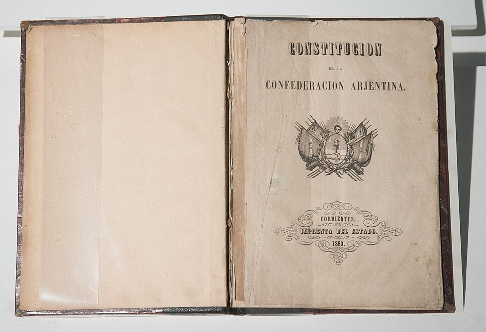

El Congreso de Santa Fe sanciona la Constitución de la Confederación Argentina
Tras cuarenta años de ensayos, guerras civiles y desencuentros, los diputados de trece provincias aprobaron una carta que organiza el país como república federal. Buenos Aires, separada de la Confederación, mira desde afuera.

En la noche de ayer, vísperas del aniversario del pronunciamiento de Urquiza contra Rosas, el Congreso General Constituyente reunido en esta ciudad sancionó al fin la Constitución que estas provincias se deben desde 1810. El texto declara al país una república representativa y federal, reparte el poder entre un presidente, un congreso de dos cámaras y una corte de justicia, y consagra para todos los habitantes del suelo argentino —no sólo los ciudadanos: todos los hombres del mundo que quieran habitarlo— las libertades de trabajar, comerciar, enseñar y publicar sus ideas.
Los constituyentes trabajaron con el libro del tucumano Juan Bautista Alberdi sobre la mesa: sus «Bases», escritas al calor de Caseros, proponen poblar el desierto, atraer la inmigración europea, tender ferrocarriles y fundar la riqueza antes que la gloria. «Gobernar es poblar», resume el publicista, y la Constitución lo escribe en artículos. Quedan garantizados también el fin de la confiscación de bienes y de los tormentos, heridas todavía frescas de nuestras discordias.
El camino hasta esta sala pasó por un campo de batalla: hace quince meses, en Caseros, el ejército del gobernador de Entre Ríos venció al de don Juan Manuel de Rosas, que gobernó estas provincias durante veinte años con la suma del poder público y hoy vive exiliado en Inglaterra. Urquiza convocó entonces a los gobernadores en San Nicolás para poner al fin fecha al viejo pagaré constitucional; Buenos Aires firmó, su Legislatura se arrepintió del precio —igualdad de las provincias, nacionalización de la aduana— y en septiembre la ciudad se alzó y se apartó. Los que quedaron resolvieron que la ley no podía seguir esperando a la provincia que lleva medio siglo haciéndola esperar.
Los constituyentes que sesionan en el viejo cabildo de Santa Fe no son próceres de mármol sino hombres jóvenes y mal pagos —abogados, clérigos, médicos, más de uno sin haber cumplido los treinta— que debatieron a la luz de las velas y con el mate rondando la mesa. La discusión más brava no fue el federalismo sino la religión: si el Estado debía garantizar los demás cultos, cosa que espantaba a los diputados más devotos y que los partidarios de la inmigración defendieron con un argumento de almacén: no vendrán brazos ingleses ni alemanes adonde no puedan casarse ni enterrar a sus muertos. Ganó la tolerancia. Y la jura solemne en todas las provincias quedó fijada para una fecha que ya sabe de juramentos: el 9 de julio.
Una sombra empaña la jornada: el sillón de la provincia más rica está vacío. Buenos Aires, alzada desde septiembre contra el general Urquiza, no envió diputados y se gobierna aparte, con su puerto y su aduana. La Constitución nace así con trece provincias y una ausencia que pesa como catorce. Habrá que esperar —¿años?, ¿otra guerra?— para que la casa esté completa. Pero el cimiento quedó puesto, y es de los que duran: cualquiera sea la suerte de los hombres que la firmaron, esta ley fundamental está llamada a sobrevivirlos a todos.